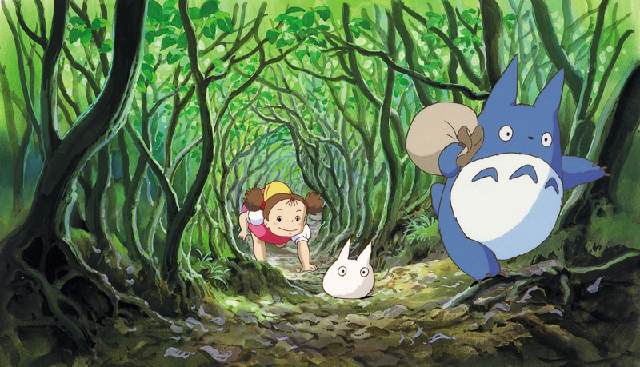
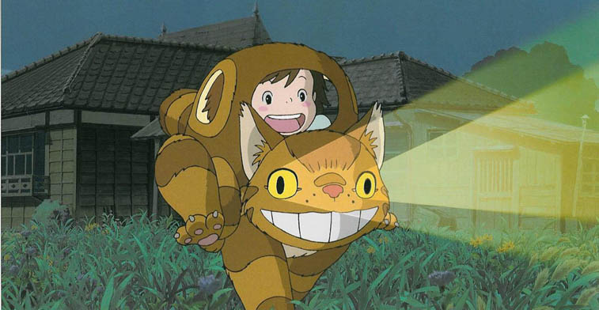
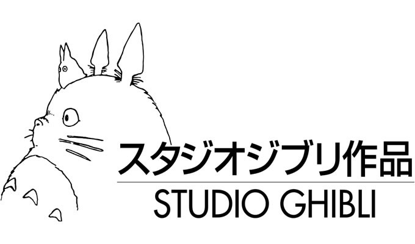

Mi vecino Totoro (en japonés: Tonari no Totoro; en inglés: My Neighbour Totoro, mismo significado) es una película animada japonesa dirigida por Hayao Miyazaki en 1988 sobre un espíritu del bosque al que llaman "Totoro"(Los Totoro son espíritus del bosque que habitan en el interior de un gigantesco árbol milenario).
src="Imagenes/My-Neighbour-Totoro-008.jpg" alt="Totoro 1" width="50%"/>
La película es un retrato de la vida rural japonesa en los años cincuenta. Un profesor universitario se traslada junto a sus dos hijas a una casa cerca de un bosque mientras su mujer se recupera de tuberculosis en un sanatorio rural.

Sus hijas descubren la existencia de los "duendecillos de polvo", de este modo aprenden que hay seres que no todos pueden ver, como los espíritus del bosque, solamente aquellos de corazón puro. Mei, de cuatro años de edad, resulta fascinada al encontrar dos pequeños espíritus y se determina a encontrar al rey del bosque, Totoro.

Productores
Fue realizada por los Estudios Ghibli, de los que Totoro es su logotipo. Elegida por la revista británica Time Out como la mejor película de animación de la historia.1 fue reestrenada en cines el 30 de octubre de 2009 en España mediante la distribuidora Aurum.
 El director artístico fue Kazuo Oga, el cual dibujó y diseñó a Totoro cuando Hayao Miyazaki le enseñó una imagen de Totoro encima de una montaña. Miyazaki quiso darle esta oportunidad a Oga que se lo tomó como un reto a su carrera y experiencia artística, gracias a Mi vecino Totoro la carrera de Oga gozó de una mayor popularidad y prestigio.
Miyazaki y Oga discutieron sobre cuál iba a ser la paleta de imágenes de Mi vecino Totoro. Oga se decantaba por colores más tenues que recordaran a la prefectura de Akita mientras que Miyazaki prefería unos tonos más cálidos para que los colores se asemejaran más a la prefectura de Kanto, al final fue una mezcla de ambos. Toshio Suzuki, productor principal de Studio Ghibli afirmó: "Era la naturaleza pintada con colores translúcidos".
Distribución
Mi vecino Totoro tuvo un enorme éxito en su estreno en Japón en 1988. El impacto cultural fue tan grande que Totoro se convirtió en la mascota del estudio y es tan popular en los niños japoneses como Winnie the Pooh para los niños occidentales. En Estados Unidos se estrenó en 1993, siendo el primer país occidental en recibir la película. Los críticos estadounidenses acogieron muy bien la película, diarios como The New York Times la definieron como "una bella y artística obra maestra".
En Europa, el estreno de Mi vecino Totoro fue más tardío. Finlandia fue el primer país europeo que estrenó la película en el año 1995. En España la película se lanzó directamente en VHS en el año 1996. Francia estrenó la película en diciembre de 1999, reestrenándola otra vez en los cines en agosto de 2002. En Iberoamérica, la película se estrenó en VHS a lo de largo la década de 1990.
Dejanos tus datos si precisas mas información !
Noelia de la Rosa - Desarollo de Aplicaciones Multiplataforma - DMTT 5A